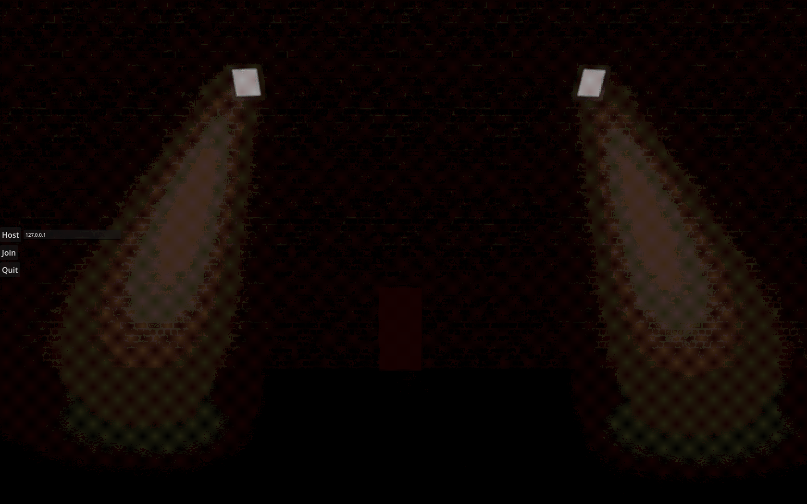

Welcome to Red Fox Entertainment's project showcase. Here you can find our latest projects and games.
A Co-op Horror game inspired by Lethal company where you and your friends must create a cure for a deadly virus
A lightweight terminal-based tool for encrypting and decrypting messages using various ciphers.
Developed by Herrman Stein, this tool is designed to be simple and effective for anyone needing to secure their messages.
I am aware that the CipherMaster logo looks similar to the C# programming language logo but this was not intendet
A 2D platformer game where you explore a frozen world, and try to find the holy milk.
Developed by Herrman Stein, this game is a fun platformer with unique mechanics.